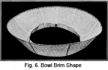

1928—The New-Way Course in Millinery and Hat Design
Lesson 6—Buckram Frames
Buckram Frames
In an earlier lesson you learned how to make wire frames, and how to cover them. That was the first important step in millinery construction. Now you are going to learn how to make buckram frames, which is the next important step. In this lesson you will be taught how to make the buckram frames for the eight principal hat shapes.
Of course, the same thing holds true of the buckram frame as of the wire frame. While both may be purchased in the millinery shop, the true milliner will prefer to make them herself. After all, the trimming of the hat is only one of the many phases of millinery; the real creating of the hat begins with the frame. That is why, in order to be a competent milliner, you must master the making of frames, as well as the trimming and finishing of hats.
Materials Used in Making Buckram Frames
Before we start on the actual construction of buckram frames, let us see just what materials we must have. Buckram itself is a rather coarse, glue-sized material used for the foundation of fabric hats. It is a stiff material and comes in various weights. The buckram is cut and shaped, wired where necessary, and covered with the hat material. The materials most frequently used in making fabric hats are velvet, silk, duvetyne and fabric cloths. Light-weight buckram is used in making summer hats.
In handling buckram, there are many important things that the milliner must remember. Suppose we arrange these in simple steps, so that you can study each one separately. You will find that it simplifies the lesson.
1. The first thing to bear in mind is that the smooth side of buckram is the right side. This smooth, right side is always used where it shows most. It is usually used on the outside of the crown, on the upper side of the flat brim; but on the under side of a turban or roll brim. Always remember this when making and covering buckram frames.
2. It is important that the buckram does not become creased or broken. Always handle it carefully, exerting great care to prevent creasing.
3. You will find, in purchasing buckram that it comes rolled. The best way to handle it is with the roll down and toward you. You will find it facilitates the handling of rolled buckram if you draw the buckram across the edge of the table before using, bending it in the opposite direction to that in which it rolls. But be careful not to break or crease the buckram during the process.
4. In making buckram frames, use coarse thread. Geneva or Milliners' Cotton is the best. Never use sewing silk, as the buckram will cut it. In millinery, silk is used only when fine materials are used and when the threads must be hidden. It is used also when the color of the material must be matched—but only if the material is fine.
5. Whenever possible, hat brims are cut in one piece. The correct method for cutting hat brims will be taken up in detail later —for the present, bear in mind that it is best to cut them in one piece rather than piece them.
6. To give a firm foundation for the wire, and to make the sewing easier, the brim-edge should be machine stitched as close to the edge as possible.
7. For wiring purposes on buckram frames, brace wire is used on all edges. The only exceptions to this rule are the straight flat sailor and the transparent hat. Spring wire is used for the edges of these hats.
8. Sometimes you may find occasion to use crinoline in your millinery work. It is a thin, open-mesh, glue-sized material and is used mainly to cover wire frames and to bind the edges of buckram frames. Frequently it is used to make soft frames for fabric hats. It is very much finer than buckram.
9. Other materials used occasionally in the construction of hat frames are tailor's canvas and milliner's canvas cloth. The new sports hats are often made with this foundation. It is seldom wired, and its purpose is to add body to the hat without adding also the stiffness and weight that the wire or buckram foundations add.
10. Always use buckram, or any other foundation material, with the lengthwise thread running straight from front to back. Otherwise the shape will not keep its correct lines, and the hat will not wear well.
11. Where a foundation that is firm without being stiff is required, Panama Cloth is sometimes used. It is also used, frequently, under braid for summer hats. When used in this latter manner, it should be supported by brace wires. Panama Cloth is much more closely woven than buckram, but it is not as heavily sized. Therefore you will find that it is a great deal more pliable.
12. A cloth that is about the same weight and stiffness as single ply buckram, but which has an elastic quality which the other has not, is called Elastic Cloth. It is very appropriate for fitting on the rolled brim, when it is cut on the bias, and it is very often used for this purpose.
13. Still another foundation material is called lacette. It is a lace-like material which is used in the making of lace hats.
14. The details of frame construction must be studied very, very carefully. No step is so small as to be overlooked; no detail is too minute to claim your most careful attention. Each type of buckram frame is taken up individually; study each one until you are positive that it is entirely mastered.
If the brim of the hat you are making is wide and a very firm foundation is desired, you may add an extra wire around the brim at a point half-way between the headsize wire and the edge wire. It should be sewed on in exactly the same way as the headsize wire is sewed on.
The Eight-Point Guide
Here is a plan that will help you with the making of your buckram foundation. As a guide for marking the eight points on the side crown and brim at the headsize, cut a strip of paper which is just the length of the headsize. Fold it into eight sections, exactly equal. Cut off one of these sections and use it as a gauge. Begin at the front for the first mark, and proceed around the hat.
Brims
Sailor Brim
The first buckram frame we shall make is for the sailor hat. The buckram brim can be made any shape desired, simply by increasing or decreasing the circumference at certain points. The flat sailor brim is the foundation of all brims. We will begin with it, and from it will make several other shapes, each one of which may be varied to suit the taste and style of the individual.
1. Secure several sheets of heavy, stiff wrapping paper. This is to be used for practice work and for pattern-making. As soon as you are able to make the exact shape you want in the paper, you may proceed to make it in buckram and wire. But you must first be sure that your paper frame is correct.
2. Cut a square of the paper, measuring 22 inches on all sides.
3. Fold it in half.
4. Fold once again into quarters.
5. Fold diagonally and you will have divided the circle into eight equal
parts. One side of the folded paper will be similar to that shown in the
illustration. (Fig. 1.) If properly folded the paper when opened .will be
creased as shown in Fig. 2.
diagonally and you will have divided the circle into eight equal
parts. One side of the folded paper will be similar to that shown in the
illustration. (Fig. 1.) If properly folded the paper when opened .will be
creased as shown in Fig. 2.
6. Locate point B at a distance from point A equal to one-half the diameter of the brim.
7. Measure the distance between points A to B, and on the opposite side locate a point exactly this distance from point A. Then make a line that curves slightly outward from this point to point B. Proceed to cut along this line. (Fig. 1.)
8. This line you have just cut forms the outer circular edge of the hat brim. Open up your pattern and mark the center front and back, and also the side front and side back. Using this as a pattern, cut several circles from the stiff paper.
9. Place one of these circular papers on the table, and cut a buckram brim, using the paper as a pattern. Keep the folded paper as a pattern for future use.
10. Mark the center front, center back, side front and side back of this brim. (Fig. 3.)
11. The headsize in the center should now be marked in this manner: Draw a line across the center of the circle from front to back. The exact center of this line should be at the center of the circle. This line should be equal in length to the diameter of the headsize plus one inch.
12. Draw another line at right angles to the line you have just made, the exact center of this new line meeting the center of the circle. This line should be equal in length to the diameter of the headsize less one inch.
13. Connect the ends of these lines with a curved line. Then draw another circle one and one-half inches inside of this first circle—and you have the headsize line.
It is necessary only to mark the headsize on the buckram, as this is to be a sailor shape. The headsize is never cut out of a flat sailor until after the covering is put on and the edges finished.
14. Proceed to stitch all around the edge of the buckram brim about one-sixteenth of an inch from the edge, doing the stitching by machine.
15. Now attach a spring wire to this edge. As you remember, spring wire is a fine, steel wire fitted with a milliner's clamp which is supplied especially for sailor shapes or for wide-brimmed hats the edges of which are straight. It is also used on transparent hats.
16. Oversew this wire in place. Use heavy milliner's thread. Hold the wire close to the edge on the smooth side of the buckram and sew over the edge of the hat and wire, using a fine overcast stitch. Be sure to make these stitches close together, and draw them tightly enough to hold the wire securely in place. This wire must be close to the edge, but must not come beyond the edge. Nor may it be so far from the edge that the buckram is liable to crack and present an uneven, untidy edge.
17. Measure loosely around the head along the line where the hat will rest. Use a tape measure. Then cut a brace wire two inches longer than the measure you have just taken, and lap this wire one inch, tying the ends in two places with tie wire.
18. Pull this wire until it is identically the same shape as the headsize marked on the buckram. It may be larger or smaller than the headsize marked on the pattern, but it must fit the head.
19. You are now ready to pin the wire to the buckram at the center front, center back, side front and side back. Be sure to do this on the upper side of the brim. Having pinned it firmly in place, sew it in the following manner: Thread the needle with heavy milliner's thread and bring it up through the buckram very close to the wire. Take a stitch over the wire, putting the needle through the buckram in exactly the same place it was brought through from the under side. Continue in this manner until the wire is attached firmly. Make the stitches about one-half inch apart.
20. Now cut a strip of crinoline on the bias, making it one inch wide. Fold lengthwise through the center and stretch until it is one-half its original width. Slip this over the outer edge of the brim and sew it in place, using the even basting stitch. Make the stitch three-eighths of an inch long on the top and three-eighths of an inch on the under side. You will find that this forms a binding on the edge which gives a fine foundation and a smooth finish to the edge.
21. Your sailor brim is now completed (Fig. 4). The covering of the brim will be taken up in a later lesson.
Regarding the Sailor Brim
In making the sailor brim we have just completed, it will be necessary for you to use the actual buckram and crinoline. This is for the purpose of practice, and to enable you to learn how to wire the edge and headsize, how to handle buckram, etc. But for other shapes, it will be less expensive and just as satisfactory to use stiff wrapping paper for practice work.
When the brim of a hat is curved, a pattern should be made of paper and when the desired shape is obtained, the paper should be cut from edge to headsize at the center of the back and laid flat on the buckram as a pattern. The brim may then be cut in accordance with this pattern, with one-quarter inch allowed on both ends of the back for a lap. This seam is then lapped, the stitching being either on the edges or through the center, and trimmed close to the stitching.
Still another method: The hat may be cut in one piece and a part of the slashes made and lapped. First get the correct shape in the paper pattern, slash at the center back, and place the pattern on the buckram. Open enough slashes to permit the pattern to lie absolutely flat on the buckram. Mark these open slashes on the buckram and proceed to cut the shape according to the pattern. Then join the center back and stitch the slashes. Finish as the sailor shape is finished.
Before beginning the next step in the construction of millinery shapes, be sure that you review the making of the sailor-brim. Master it thoroughly before proceeding with the Bowl Brim. Unless you master each step as you study it, you cannot hope to be perfect in the art of millinery.
The Bowl Brim
We will proceed exactly as before, one step after another, using stiff wrapping paper instead of buckram this time.
1. Take one of the patterns, cut from the stiff paper, and mark the eight points. These are center front, center back, right side, left side, and the points exactly half-way between each of these.
2. Mark the headsize on the circle as for a sailor brim. Then mark a smaller circle one and one-half inches inside of it. Cut along the line of the inner circle.
3. Now slash the paper toward the outer circle, bending the slashed ends up. These will form a part of the foundation on which the crown is sewed. This forms the headsize. Slip the hat on and tear away the slashes carefully until the hat fits just right. Having found the correct headsize, you will do well to mark it on one of the circles and keep it for future use, or for a pattern.
4. At each of the eight points, slash the brim from the edge toward the headsize. The slash should be about one- half the width of the brim.
5. Now lap these slashes about three-quarters of an inch. Bear in mind that the deeper the lap is made, the more the brim will roll—but be very careful not to lap the slash more than three-quarters of an inch. It may be less, but never more.
6. You now have a roll brim, made of stiff wrapping paper. When opened for cutting the pattern will appear like Fig. 5. If it were of buckram, as it would be if you were actually making a hat, the slashes would be stitched firmly on the machine either at the center with the edges trimmed close to the stitching; or on the edges of the lapped buckram. A backstitch may be used if desired. Furthermore, if it were made of buckram, the smooth side of the buckram should be used on the under side of the brim so that when the brim is turned up the smooth side would be visible. After the slashes are stitched, the edge also is stitched, wired and bound, the same as the sailor brim. Then the headsize wire is applied, and your brim is all ready to cover. (Fig. 6.)
7. Always remember to handle your buckram frame carefully to prevent it from becoming broken. Pin each slash with a pin at right angles to the edge.
You see, it's really not such a difficult matter after all to make buckram frames.
Mushroom Shapes
As you already know, the mushroom shape has a brim which droops slightly over the face. Ordinarily, the brim-shape is determined by increasing or decreasing the circumference of the circle of which the brim is made. But we are now going to make the mushroom brim, which is entirely different.
For practice purposes, use stiff wrapping paper. If you were using buckram, the smooth or right side would be on top, as this is the part which shows the most—for in using buckram the smooth side is always used where it shows the most. To make the mushroom frame, proceed in the following manner:
1. Take one of the circles you have cut from the stiff paper. Mark the headsize as in the sailor shape, and mark another circle one and one-half inches within this headsize.
2. Cut along the line of the smaller circle.
3. When you remove it, slash from the inside edge to the head- size line and turn these slashed ends lip.
4. Now slip the pattern on and proceed gently to tear these slashes until the hat fits the head comfortably. Be sure to make sufficient allowance for linings and materials—you should be able to slip a finger between the hat and head.
5. Make slashes at the center front, the center back, the side front and the side back, having them extend from the edge of the brim to within one-half inch of the headsize.
6. These slashes should now be lapped about one-quarter of an inch. This will make the brim droop—but if the droop is not deep enough make other slashes between those already made and lap them as before. The slashes should be pinned at right angles to the edge of the hat. Continue making slashes until you achieve exactly the droop you wish. In Fig. 7 we see the pattern cut at each of the eight points, lapped and opened at the center back so it will lie flat on the buckram.
7. By experimenting with these paper brims, you can learn to make any shape you wish. Perhaps you wish some adaptation of the mushroom brim. Perhaps you want a brim that slants the least bit more on one side. You should enjoy experimenting with your paper brims, as it will give you many style suggestions which may prove valuable later.
Always remember, in making mushroom shapes, that the mushroom hat can be made to droop exactly as you wish it to. When you have made the paper shape in exactly the way you want it, you may use it as a pattern from which to cut the buckram shape. To accomplish this you must first mark the alterations and then cut the circle open at the center back. Open just enough of the slashes to allow the pattern to lie flat—but no more.
In making the mushroom hat of buckram, the edge should be wired and bound exactly as the sailor hat was. The wire is applied in exactly the same way to the headsizes in all shapes of hats. The slashes, also, are stitched in the same manner. Fig. 8 shows the mushroom brim finished ready for covering.
There are many important little rules in millinery that apply not only to one shape or one type of material—but to almost all. Once learned, these rules prove of inestimable value to the milliner. To avoid difficulty and confusion later, you should make every effort to master these steps as you come to them. Do not be satisfied simply to read these lessons on buckram shapes—study them. And practice while you study. Use heavy wrapping paper to experiment with various different types of shapes —and do not be satisfied until you are able to make any shape you wish without the least bit of trouble.
Roll Turban
Now we will see how the buckram foundation for the roll turban is made. As before, use stiff paper for your practice work. If you have followed your work carefully, you should have stiff paper circles on hand.
1. Take one of the stiff paper circles and mark the headsize; also the smaller circle inside the headsize exactly as you have already done in the mushroom and sailor shapes. Cut out this inner circle.
2. Cut slashes at the eight points of this circle, making them extend from the edge to within an inch and a half of the headsize.
3. Lap these edges from one-half to three-quarters of an inch, pinning them with the pins at right angles to the edge of the brim.
4. Now make eight more slashes, each slash being midway between the first slashes but at least one inch shorter than those first. Proceed to lap them over and pin as before.
5. As in the case of the mushroom frame, if you find that the brim does not satisfy you—if it does not roll enough—make additional slashes in the edge, lapping them enough to give the proper shape. These slashes should be shorter than the others. Fig. 9 shows the pattern open ready to place on the buckram.
6. If you were making this frame of buckram, you would stitch each slash in place, or rather each set of slashes, before proceeding with the next set. It is better workmanship and gives better results, than to make all slashes first before doing any actual stitching.
7. When the slashing is completed, and the proper shape is acquired, wire is applied to the edge as it was in the sailor shape. The headsize also is wired. (Fig. 10.)
It is hard to make the roll turban in any other way except by slashing. You should practice quite a bit with paper before you work with buckram. Why waste buckram, when it is possible to practice with paper?
The Straight Turban
It is made simply with sixteen slashes at the edge of the brim, the first eight being made to just within one inch of the headsize. The eight others come just between these first eight, and are one inch shorter. The first are lapped from one-half to three-quarters of an inch; the second are lapped just enough to make the brim turn straight up but not turned in at the edge.
When made in buckram, this hat is stitched, wired and bound exactly as are the others previously mentioned. Care must be taken in making the straight turban to have all sides mathematically even. One side must not curve more than the other or the hat is not a perfect turban.
Poke Bonnet
You will enjoy making the poke bonnet. It is an attractive little shape, always popular, and most always becoming. It is really quite simple to make, and you will have no trouble whatever if you follow these step-by-step directions.
1. First take one of the paper circles, mark the headsize and cut out the smaller circle.
2. Now slash the headsize as in all previous shapes, and fit comfortably to the head. Always remember to make allowance for linings and materials.
3. Slash the brim to within one inch of the headsize at the center front.
4. Lap this one slash enough to make the lines of the poke suit the face of the wearer. No definite rule can be given for the making of this poke. Good judgment and good taste must be used; the droop must be just right for the wearer's face. Having found the correct poke, pin the slash.
5. At the back, slash the brim through the headsize and lap it so that it droops over the hair or head. This, too, is largely a matter of judgment. Proceed to pin this slash.
6. Trim the brim in order to get a good line from center front to back. The brim should be twice as wide in front as in the back—if it isn't, it isn't a true poke. Trim the brim until you have a true shape. When opened ready to place on the buckram the pattern will appear as Fig. 11.
7. If your shape is of buckram, you should now stitch, wire and bind the edges as were the other shapes already made. (Fig. 12.)
If you have followed these directions carefully, you will now have a smart, attractive poke shape which you will enjoy trimming. Shape-making can be positively fascinating if one takes it seriously enough! It is really one of the most interesting—and valuable—phases of millinery.
The Rose Petal Hat
You will probably find making the rose petal hat a pleasure. When well—made, there can be nothing quite as charming as the petaled hat. It can be trimmed in countless attractive ways and is suitable for sports and dress hats alike.
1. Fold one of your paper circles in half. Then fold it in quarters, and finally in eighths.
2. Now lay it flat on the table, and with your pencil make a large scallop at the end of this folded paper. (You may use the base of some round object such as a drinking glass.) You may make the scallop as deep as you wish.
3. Cut long the line of the scallop and open the paper. (Fig. 13.)
4. Proceed to cut out the headsize exactly as you did before, and you will have your pattern for the rose petal hat.
5. If you wish to duplicate the frame in buckram, for an actual hat, use the paper shape as a pattern from which to cut the buckram shape.
In making the rose petal hat you must be very careful that the edges are even. Otherwise jagged points will be visible and will spoil the outline of the hat. To achieve a flat, sharp turn of the wire at each point where the petals meet, simply turn the wire directly over on itself. The wire is sewed to the edges, exactly as in other frames.
The Flare Hat
This type of hat is worn mostly by the young miss. In fact, by some people this is called the flapper hat, because it is so well suited to the younger person. Perhaps no type of hat is so appropriately designed for the younger generation than the hat made with many flares. As already mentioned, this hat may be made with flares on one side instead of all the way around.
One makes the brim exactly in the same manner as one makes the brims for other hats, arranging the headsize and slashing the brim at the eight points. But instead of lapping these slashes, gussets are set in to make the brim wider at the edge. Gussets are small wedge-shaped pieces set in the slashes. These gussets are shown in Fig. 16.
Care must be taken in inserting the gussets to have each one the correct size. It would never do to have a wide gusset in one place and a narrow one in another. All must be identical. And when the gussets are all set in and stitched, the extra buckram must be neatly trimmed away from the seams.
The headsize for the flare hat is made in the same way, finished in the same way, and the edges are wired and bound in precisely the same way as the edges of other frames are wired and bound. However, one may bend the wire on the flare hat to keep the brim in its proper shape. The finished form is seen in Fig. 16.
Picture Hats
There are many variations of the picture hat—and there are many types of frames you can make that would come under the classification of picture hats. Here is an opportunity to use imagination and originality; the picture hat frame offers many suggestions for graceful lines and novel curves.
As you remember from the early part of this lesson, a picture hat may turn up on one side and droop on the other; or it may turn up on one side and be straight on the other. Let us see how this last type of hat, called the turned picture hat, is made. It will then be a simple matter to devise other picture hat shapes.
Fig. 17 shows a pattern of a picture hat that turns up on one side and is straight on the other.
1. First cut a circle of stiff paper for practice work. We will not attempt to make frames of buckram until we are able to make perfect paper frames.
2. Mark a headsize as taught in the lesson on sailor hats. The headsize in a picture hat may be exactly in the center, or it may be placed in such manner that the brim will be wider on one side than the other. You may use your own taste and judgment in this matter. For practice purposes, however, it may be wise to retain the centered headsize.
3. Slash the side of the brim that is to turn up, slashing from the edge of the brim through the headsize. Lap this slash enough at the outer edge to have the brim turn up the desired amount. Graduate this lap to nothing at the headsize.
4. Now fit the headsize so that it is comfortable. When made in buckram, this shape is finished just as the sailor frame is finished.
5. If the picture hat is to be shaped, if it is to roll up on one side and down on the other, the side that droops should be slashed in several places and gussets set in. Use only as many gussets as are necessary to produce the desired droop. The other side may be slashed and lapped as many times as are necessary. Experiment with paper until you find exactly the turn and droop that is most becoming to the wearer. The headsize and brim are wired and bound as all others are.
In this lesson you have been taught how to make the buckram frames for the eight basic types of hats. But from these eight Fashion sometimes achieves as many as eighty styles each season. There are countless adaptations of the sailor shape, the mushroom shape, the turban. Practice with your stiff paper until you can make, quickly and easily, any shape you see. You should be able to duplicate without trouble any type of hat that appeals to you in a shop-window or picture; and you should be able to make the frames as neatly and attractively of buckram as you do of paper.
Only practice can make perfect. No matter how experienced or how inexperienced you may be, you cannot hope to become a successful creator of beautiful hats unless you practice earnestly and conscientiously. You will be surprised when you see how simple hat-making becomes after you practice your lessons and master them.
Of course these frames can be made of crinoline, if desired. For a soft hat, this material is very satisfactory. The main thing is to know how to make the different shapes, then the right material can be selected.